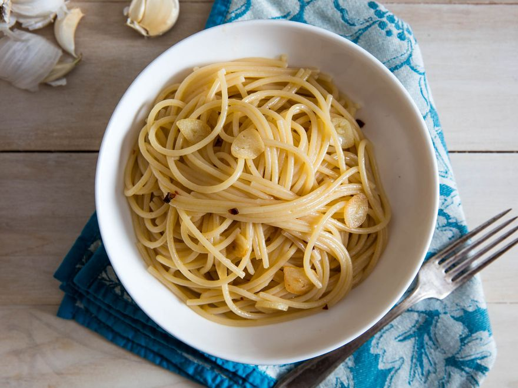

Spaghetti Aglio e Olio

Description
One of the most basic pasta sauces, aglio e olio uses just garlic and olive oil (and maybe a pinch of red pepper flakes for heat). It sounds too simple to be good, but it's among the best.
Ingredients
- Kosher salt
- 1 pound (450g) dried spaghetti
- 1/2 cup (120ml) extra-virgin olive oil, divided
- 4 medium cloves garlic, thinly sliced
- Red pepper flakes, to taste (optional)
- Minced flat-leaf parsley, for serving (optional)
Steps
- In a pot of salted boiling water, cook spaghetti until just shy of al dente (about 1 minute less than the package directs). Reserve pasta cooking water.
- Meanwhile, in a large skillet, combine 6 tablespoons oil and garlic. Add pinch of red pepper flakes, if using. Cook over medium heat until garlic is very lightly golden, about 5 minutes. (Adjust heat as necessary to keep it gently sizzling.)
- Transfer pasta to skillet along with 1/2 cup pasta water, increase heat to high, and cook, stirring and tossing rapidly, until a creamy, emulsified sauce forms and coats the noodles. Remove from heat, add remaining 2 tablespoons olive oil, and stir well to combine. Mix in parsley, if using, and serve right away.